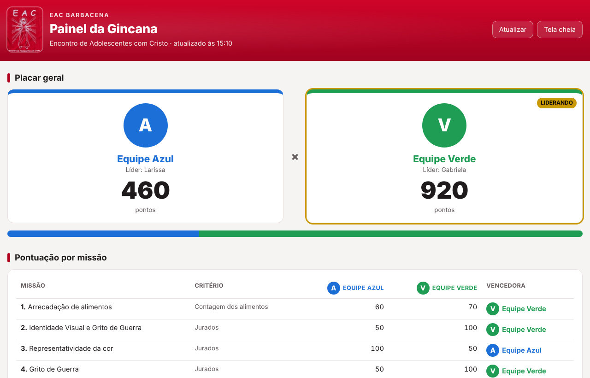
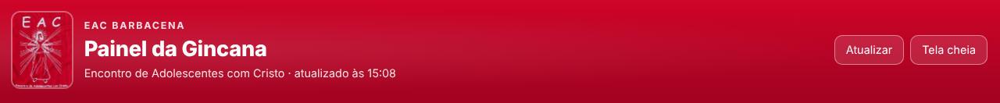
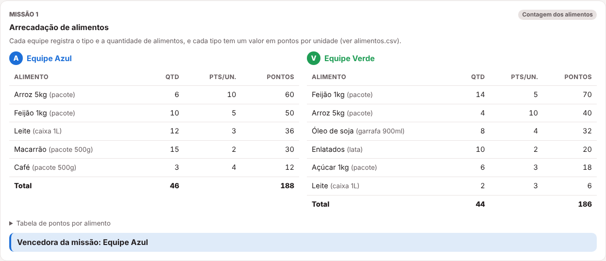
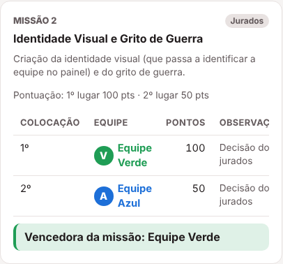
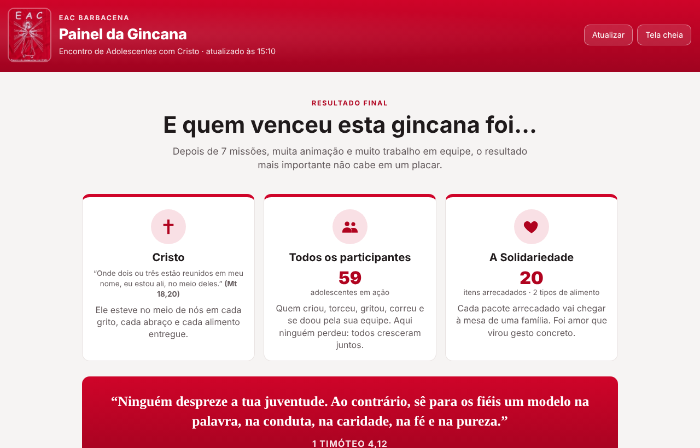

1Como o painel funciona
O painel fica publicado no GitHub Pages e é usado totalmente online:
- Endereço do painel: roncalli.github.io/EACPainel — abre em qualquer computador, telão ou celular.
- Dados: ficam nos arquivos CSV da pasta
dados/do repositório github.com/roncalli/EACPainel. - Para atualizar: edite o CSV no GitHub. Em 1 a 2 minutos o site é republicado e o painel aberto se atualiza sozinho.
| Arquivo / pasta | Para que serve |
|---|---|
dados/ | Os 6 arquivos CSV com as informações da gincana (é aqui que você mexe). |
dados/logos/ | Onde colocar as imagens das equipes (identidade visual). |
dados/exemplos/resultados.csv | Resultados de exemplo com todas as missões concluídas, para ensaiar a página de Resultado Final. |
index.html, painel.js, painel.css | O painel em si (estrutura, código e aparência). |
assets/ | Logo do EAC usado no cabeçalho. |
GUIA.html / GUIA.pdf | Este guia (o PDF é a versão para imprimir). |
2Abrir o painel
- No computador do telão, abra roncalli.github.io/EACPainel no Chrome, Edge ou Firefox.
- Clique em Tela cheia (Esc sai).
- Pronto: o painel relê os dados a cada 30 segundos. Não é preciso mexer no telão durante a gincana.


| Botão | O que faz |
|---|---|
| Atualizar | Relê os dados na hora, sem esperar os 30 segundos. |
| Tela cheia | Ocupa a tela toda — ideal para o telão/projetor. |
3Como editar os arquivos CSV no GitHub
É preciso estar logado no GitHub com uma conta que tenha permissão no repositório.
Jeito rápido: direto no navegador
- Abra a pasta
dadosno GitHub e clique no arquivo (ex.:resultados.csv). - Clique no ícone de lápis (Edit this file).
- Edite as linhas, com os campos separados por
;. Não mude a primeira linha. - Clique em Commit changes… e confirme em Commit changes.
- Em 1 a 2 minutos o painel mostra a alteração.
Pelo Excel / Google Planilhas
- Edite o arquivo e salve como CSV (no Excel: Salvar como → CSV UTF-8; no Google Planilhas: Arquivo → Fazer download → .csv).
- Confira se o nome do arquivo é exatamente o original (ex.:
arrecadacao.csv, sem “(1)” ou “dados - ”). - No GitHub, abra a pasta
dados, clique em Add file → Upload files, arraste o arquivo e clique em Commit changes. Ele substitui o anterior.
; ou ,, número com vírgula (2,5), maiúsculas/minúsculas e acentos nos nomes de equipe e alimento — o painel entende todos.4Cadastrar equipes e integrantes
dados/equipes.csv — uma linha por equipe
| Coluna | O que colocar | Exemplo |
|---|---|---|
id | Código curto da equipe. Não mude depois — é usado nos outros arquivos. | azul |
nome | Nome exibido no painel. | Equipe Azul |
cor | Nome da cor. | Azul |
cor_hex | Código da cor usada no painel. | #1d6fd8 |
logo | Caminho da imagem (pode ficar vazio até a Missão 2). | dados/logos/azul.png |
grito_de_guerra | Frase exibida no placar (opcional). | Azul é união! |
dados/integrantes.csv — uma linha por pessoa
equipe;nome;funcao azul;Ana Souza;Líder azul;Bruno Lima;Membro verde;Felipe Costa;Líder
equipe é o id da equipe; funcao é Líder ou Membro. Apague os nomes de exemplo e coloque os reais.
5Conferir missões e pontos
dados/missoes.csv já vem com as 7 missões. Normalmente você só precisa conferir os pontos.
| Missão | tipo | pontos_1 (1º) | pontos_2 (2º) |
|---|---|---|---|
| 1 – Arrecadação de alimentos | arrecadacao | 0 (bônus opcional ao vencedor) | 0 |
| 2 – Identidade Visual e Grito de Guerra | colocacao | 100 | 50 |
| 3 – Representatividade da cor | colocacao | 100 | 50 |
| 4 – Grito de Guerra | colocacao | 100 | 50 |
| 5 – Queimada | colocacao | 100 | 50 |
| 6 – Circuito | colocacao | 500 | 0 |
| 7 – Dinâmica | colocacao | 100 | 50 |
Para mudar um valor, altere pontos_1/pontos_2. Também dá para mudar nome, descricao e julgamento (texto exibido no painel).
Para remover uma missão, apague a linha; para incluir, crie uma linha nova com outro id.
6Missão 1 – Arrecadação de alimentos
Passo 1: tabela de valores (dados/alimentos.csv) — antes da gincana
alimento;unidade;pontos_por_unidade Arroz 5kg;pacote;10 Feijão 1kg;pacote;5 Óleo de soja;garrafa 900ml;4
Defina quanto vale cada unidade de cada tipo de alimento. Divulgue esta tabela às equipes antes da missão — isso dá transparência.
Passo 2: lançar o que cada equipe trouxe (dados/arrecadacao.csv)
equipe;alimento;quantidade;observacao azul;Arroz 5kg;6; verde;Feijão 1kg;14; verde;Leite;2;Entrega da segunda rodada
- Pode lançar várias linhas do mesmo alimento (entregas em momentos diferentes) — o painel soma.
- O nome do alimento precisa ser igual ao da tabela de valores (acentos e maiúsculas não importam).
- O painel calcula sozinho: quantidade × pontos por unidade, subtotal por alimento, total por equipe e equipe vencedora.

7Missões 2 a 7 – Lançar resultados
Assim que os jurados (ou o jogo) definirem o resultado, lance em dados/resultados.csv duas linhas por missão, uma para cada equipe:
missao;equipe;colocacao;observacao 4;verde;1;Decisão dos jurados 4;azul;2;Decisão dos jurados
missaoé o número da missão;colocacaoé 1 ou 2.- Os pontos vêm automaticamente de
missoes.csv. - Use a
observacaopara registrar o motivo (ex.: “Venceu 2 sets a 1”) — aparece no painel e no extrato. - Empate: lance as duas equipes com colocação 1.
- Missão sem linhas aparece como pendente.

8Identidade visual das equipes (após a Missão 2)
- Tire uma foto ou salve a imagem criada por cada equipe (de preferência quadrada,
.pngou.jpg). - No GitHub, abra a pasta
dados/logos/, clique em Add file → Upload files e envie as imagens (por exemploazul.pngeverde.png). Clique em Commit changes. - Em
equipes.csv, preencha a colunalogocomdados/logos/azul.png(e o da outra equipe). - Se a equipe escolheu um novo nome ou grito de guerra, atualize
nomeegrito_de_guerra. Para ajustar o tom da cor, mudecor_hex. - Salve com Commit changes. Em 1 a 2 minutos o logo substitui a letra em todo o painel.
idMesmo que a equipe ganhe um nome novo, o id (azul, verde) continua o mesmo, senão os lançamentos deixam de ser reconhecidos.9Atualizar o painel durante a gincana
- No GitHub, abra a pasta
dadose o CSV que quer alterar (veja a seção 3). - Clique no ícone de lápis (Edit this file), faça a alteração e clique em Commit changes.
- Em 1 a 2 minutos o site é republicado. O painel aberto relê os dados a cada 30 segundos — não precisa fazer nada no telão.
10Resultado Final
No fim do painel fica o botão Resultado Final. Ele só é liberado quando todas as missões têm resultado:
- Lance o resultado da última missão.
- O botão fica vermelho. Clique nele no momento do encerramento.
- Abre a página com a mensagem: quem venceu foi a solidariedade, todos os participantes e Cristo, com os versículos bíblicos.
- O botão Voltar ao painel retorna ao placar.

dados/exemplos/resultados.csv para dados/resultados.csv e lance pelo menos um alimento em arrecadacao.csv. Veja a página e depois apague esses lançamentos (mantendo o cabeçalho). Como o painel é público, faça isso antes de divulgar o endereço.11Problemas comuns
| O que acontece | Como resolver |
|---|---|
| Aparece uma faixa amarela “Atenção — verifique os CSVs”. | Ela diz exatamente qual linha tem problema (equipe ou alimento digitado diferente, quantidade inválida). Corrija o CSV no GitHub. |
| Enviei um CSV pelo Excel e nada mudou. | O arquivo foi enviado com outro nome (ex.: arrecadacao (1).csv). Apague o arquivo extra no GitHub e envie de novo com o nome original. |
| Alimento contado com 0 ponto. | O nome em arrecadacao.csv não bate com alimentos.csv. Copie e cole o nome da tabela de valores. |
| Alterei o CSV, mas o painel não mudou. | Confira se clicou em Commit changes e aguarde 1 a 2 minutos. Depois clique em Atualizar. |
| O logo da equipe não aparece. | Confira se a imagem está em dados/logos/ e se o caminho em equipes.csv está igual, inclusive a extensão (.png/.jpg). |
| Botão Resultado Final continua cinza. | Veja a mensagem abaixo dele e a tabela “Pontuação por missão”: alguma missão está pendente. |
| “Painel indisponível no momento”. | Verifique a internet e clique em Atualizar. O painel precisa ser aberto pelo endereço online (não funciona abrindo o index.html do computador). |
12Checklist
Antes do evento
- Abrir o painel no computador do telão e conferir a internet do local.
- Conferir o login no GitHub de quem vai lançar os resultados.
- Preencher
equipes.csveintegrantes.csvcom os nomes reais. - Definir a tabela de valores em
alimentos.csve divulgá-la às equipes. - Conferir os pontos em
missoes.csv. - Apagar os lançamentos de exemplo de
arrecadacao.csveresultados.csv(mantendo a linha de cabeçalho). - Ensaiar a página de Resultado Final (veja a dica da seção 10) e depois apagar os lançamentos de teste.
- Conferir os versículos com a Bíblia usada pelo grupo.
No dia
- Abrir o painel e ativar Tela cheia no projetor.
- Lançar cada missão no GitHub logo após o resultado.
- Após a Missão 2, colocar os logos das equipes.
- Conferir o Extrato de pontos sempre que houver dúvida — ele mostra cada ponto lançado.
- No encerramento, clicar em Resultado Final.
- Ao final, os CSVs no GitHub ficam como registro oficial da gincana.